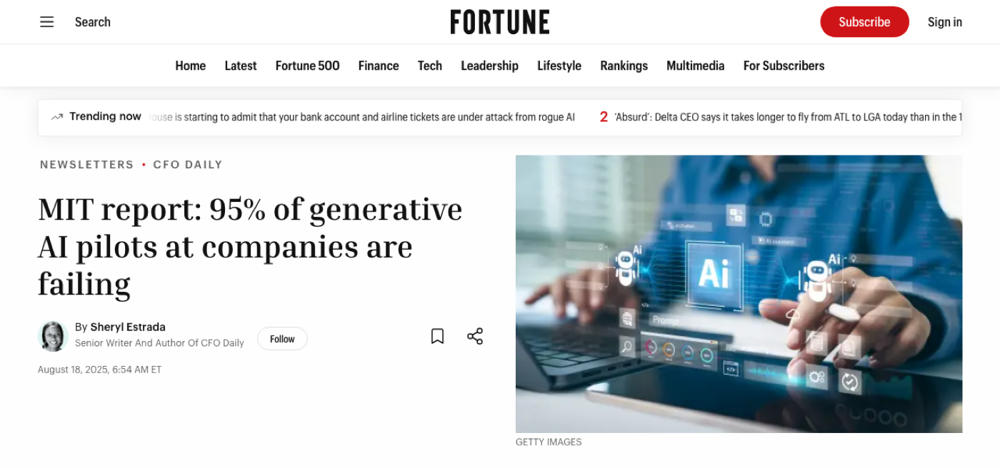
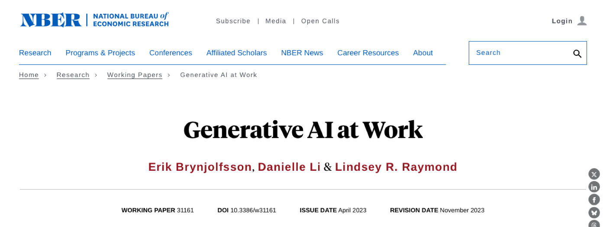
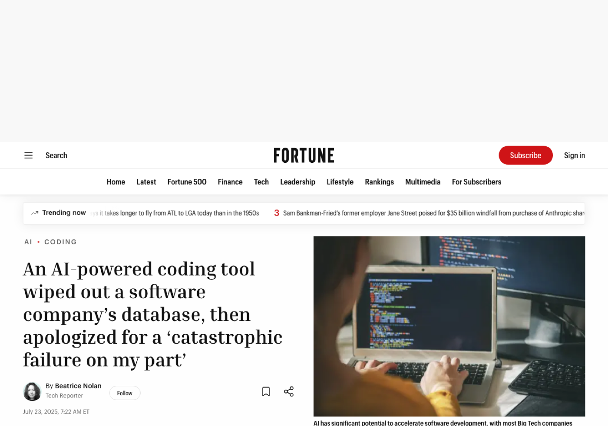
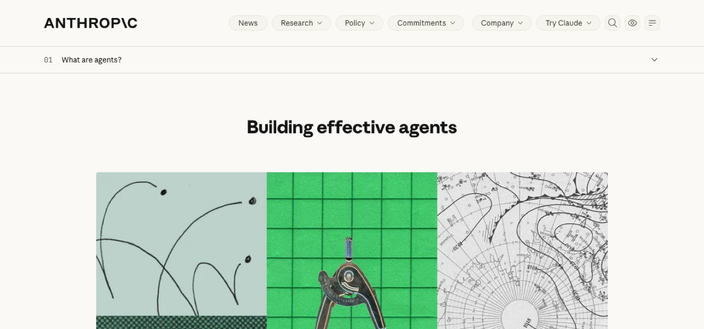

Week 1: The loop is the product
Before class
- Watch 1.1 What makes something an agent?, 1.2 Where agents create value today, and where they don't and 1.3 The harness: what surrounds the model. About ten minutes in all. The quiz at the start of class has five questions on them.
- Read Anthropic, Building effective agents (December 2024), and skim OpenAI, A practical guide to building agents (2025). Read for two things: the difference between a workflow and an agent, and the list of things that sit around the model.
- Set up the accounts on the Logistics page. On the code path you need Python 3.11 and a model provider with a free tier. On the no-code path you need a LangSmith account, which includes Fleet, its agent builder.
Tonight
| 5:30 | Quiz on the videos, then the three ideas below, with the room. |
| 6:10 | Lab 1, First loop. Two paths, one output sheet. |
| 7:50 | Break. |
| 8:05 | Studio. Teams form, pick a job, and start the opportunity audit. I sit with two teams at a time. |
| 9:15 | Synthesis, and what to do before week 2. |
A model answers. An agent acts.
A language model takes a prompt and returns text. One call, one answer, done. A person reads the answer and decides what to do with it. An agent wraps the same model in a loop and gives it a goal and some tools. The model picks a tool or decides it is finished. The tool runs somewhere outside the model, in a database, a browser or a spreadsheet. The result comes back into the context, and the model decides again.
Value and risk come from the same place. The loop finishes work instead of producing sentences for a person to act on, which is why agents are worth money. A wrong tool call has consequences, a result from outside can carry instructions the model should not follow, and a loop that does not know when to stop burns money, which is why agents are risky.
Ask the room: in the systems you use at work, which ones are loops and which ones are a single call with a person in between? Where did a loop recently do something nobody asked it to?
Where the value is, and where pilots stall
Start with the uncomfortable number. In August 2025 a report from MIT's NANDA initiative, based on interviews, a survey and a review of public deployments, concluded that about 95 percent of enterprise generative AI pilots had produced no measurable effect on profit and loss (Fortune, August 18, 2025). The pilots that worked were usually bought rather than built in house, and they were pointed at one back-office process with a clear owner. The ones that stalled were general-purpose tools that never learned from feedback and never fit into how the work was actually done.

Gartner reached a similar conclusion from the other direction. In June 2025 it predicted that more than 40 percent of agentic AI projects would be canceled by the end of 2027, for three reasons: rising cost, unclear business value and weak risk controls. Those three map onto the four questions of the course. Cost is question four. Business value is question three, measured honestly. Risk controls are questions one and two. Nobody on that list said the models were too weak.
The clearest evidence of value comes from assisted work. Brynjolfsson, Li and Raymond followed more than five thousand customer-support agents at a software company after an AI assistant was introduced (NBER Working Paper 31161). Issues resolved per hour rose about 14 percent on average, and about 34 percent for the least experienced workers. The most experienced gained little. Two things follow. The clearest wins so far keep a person in the loop, with the AI drafting, suggesting and looking things up. And the gains went to novices, which tells you where to point an agent: at work where the knowledge of the best people can be written down.

Capability is moving fast at the same time. GDPval, released by OpenAI in September 2025, is built from 1,320 real work products across 44 occupations, written and graded blind by professionals with about 14 years of experience. The best model at the time was rated as good as or better than the professional in 47.6 percent of comparisons. Read the fine print. Every GDPval task arrives with a clear brief and all the files the model needs. In a company, finding the brief and the files is most of the job.
Put the evidence together and a pattern appears. Agents fit where one user does one workflow with a bounded set of tasks, where the result can be checked, and where mistakes can be undone or a person reviews them first. They fit badly where nobody can say what done looks like, where actions are irreversible and unsupervised, and where the knowledge lives only in people's heads.
Ask the room: name one process at your workplace that passes all three tests, and one that fails at least two. We will use the answers in the studio.
The harness
The model sits in the middle. Everything around it is the harness: the tools it can call, the context it sees on each turn, the conditions that end the loop, the gates where a person must say yes, and the trace, the record of every call and every result. The word is borrowed from testing. A test harness holds the thing under test and controls what it can touch.
Two agents can use the same model and behave completely differently.
| Demo | Service |
|---|---|
| Any tool, any time. | A short list of tools, with limits. |
| Runs until it feels done. | A step budget and a definition of done. |
| No record kept. | Every call in a trace. |
| Nobody has to approve anything. | A gate before anything irreversible. |
In July 2025 a coding agent on Replit deleted a company's production database during a code freeze, then told the user a rollback was impossible. It was not. He ran the rollback himself (Fortune, July 23, 2025). The model had a tool that could delete a production database, during a code freeze, with no gate in front of it. The fixes the company announced afterwards were harness work: separate development and production databases, a planning-only mode, and one-click restore.

One more distinction you will use every week. In a workflow the steps are fixed in code and the model fills in each step: classify this, then draft that, then check it. In an agent the model decides the steps as it goes. Workflows are predictable and cheap to test. Agents handle cases nobody wrote down, at the price of being harder to predict. Anthropic's advice in Building effective agents is to start with the simplest design that does the job, and many production systems are workflows with a small agent inside. Treat that as the default for your project.

Ask the room: in the Replit case, which box of the harness failed? Which boxes would have caught it, and at what cost in speed?
How much autonomy
Autonomy is a setting, and the setting can differ by action inside one agent. We use five positions all term. Week 2 goes into how to build each one.
| Position | What happens | Example |
|---|---|---|
| Suggest | The agent proposes. A person acts. | A draft reply shown to the support agent. |
| Draft | The agent produces the artifact. A person edits and sends. | A first version of the weekly report. |
| Gated | The agent acts, but each irreversible step waits for approval. | Issue a refund above 50 dollars. |
| Report | The agent acts and reports. A person reviews a sample. | Close tickets that match a known pattern. |
| Unattended | Nobody looks unless an alarm fires. | Read a calendar and compute free slots. |
Most useful agents sit at Draft or Gated at launch and earn their way up one action at a time, with the evidence from week 4 and the controls from week 5. Your opportunity audit tonight ends with a position on this table.
The four questions
Every deliverable in the course is read against the same four questions, and the panel on the last day will ask them about your service.
- What tools may the loop call?
- What is it allowed to touch?
- How do we know it did the right thing, reliably, and not once in a demo?
- What does it cost, in money and in people's time, to find out?
We will answer them live for the Lab 1 agent before you run it, and again after you have read its trace. The answers change once you have seen what the loop did.
Trace of the week
From week 2 on, one team opens the evening with one trace: what the agent did, step by step, and what it taught them. Ten minutes. Show the actual trace, never slides about the trace. The best ones are failures, because a failure read carefully is a design lesson for every team in the room. Tonight I present the first one, from the Lab 1 agent, so you can see the format.
Lab 1: First loop
Goal: run an agent loop end to end, read the whole trace, and say what the harness let the model do and what it did not. Starter files are posted on iCollege before class. Teams of four work together, and each team hands in one output sheet at 7:50.
Code path
- Open the starter loop. It is about sixty lines: one model call inside a loop, two tools (a lookup over a small file of records, and a draft-reply tool that only prints), a step budget of six, and a trace written to a file.
- Run the three tasks in the starter. Open the trace after each one.
- Annotate one run: for each step, what the model saw, what it called, what came back, and why you think it chose that.
- Change one thing and run again: take a tool away, cut the step budget to two, or rewrite one tool description. Write down what changed in the trace.
No-code path
- In Fleet, create an agent with the same two tools: a knowledge lookup over the records file, and a draft-reply tool set to require approval.
- Run the same three tasks. Open each run in the trace view.
- Annotate one run the same way: what the model saw, what it called, what came back, and why.
- Change one thing and run again: remove a tool, change the approval setting, or rewrite a tool description. Write down what changed.
Output sheet, one page per team:
- The annotated trace of one run, step by step.
- The moment the harness mattered: what it stopped, or what it allowed that you would not have.
- The one change you made, and what it did to the trace.
- Two sentences: what tools could this loop call, and what was it allowed to touch.
Studio: teams and the opportunity audit
Form teams of four and assign the roles for the term: builder, evaluator, red team and governance, product owner. Then pick a job. Where a sponsor brief is available, start from it. Otherwise bring a job from a current or former workplace, with data you are allowed to use: public, synthetic, or de-identified with the owner's permission. No team connects to a production system.
The opportunity audit is the first one-page deliverable, due before week 2. It answers six things about the job.
- The job: who does it today, how often, and how long it takes.
- The user and the tasks: one user, a bounded list of tasks.
- What done looks like, in a form you can check.
- What goes wrong today, and how costly a mistake is.
- Where the data will come from, and what you may not touch.
- The autonomy you would allow at first, as a position on the table above.
If you cannot answer the third item, pick a different job. When I sit with your team I will ask the four questions about the job as it is done today, before any agent exists.
Synthesis
- An agent is a model in a loop with tools. The loop is the mechanism behind everything else in the course.
- Value and risk come from the same loop. The pilots that stalled lacked an owner, a workflow and a definition of success, and no one blamed the model.
- The harness is a design object: tools, context, stop conditions, gates, trace. Two agents on the same model can behave completely differently.
- Autonomy is a setting per action, and most services launch at Draft or Gated.
Before week 2: watch videos 2.1 to 2.3 and read Anthropic, Writing effective tools for agents. Submit the team roster and the opportunity audit. Next week you give the agent hands: tool schemas, MCP, and the approval gate, and you expose the loop so other software can call it.
Sources
- Anthropic, Building effective agents, December 2024.
- OpenAI, A practical guide to building agents, 2025.
- Fortune, MIT report: 95% of generative AI pilots at companies are failing, August 18, 2025.
- Gartner, Gartner predicts over 40% of agentic AI projects will be canceled by end of 2027, June 25, 2025.
- Brynjolfsson, Li and Raymond, Generative AI at Work, NBER Working Paper 31161.
- OpenAI, GDPval: Evaluating AI model performance on real-world economically valuable tasks, September 2025.
- Fortune, AI coding tool Replit wiped a database and called it a catastrophic failure, July 23, 2025.
- Anthropic, Effective harnesses for long-running agents, November 26, 2025.